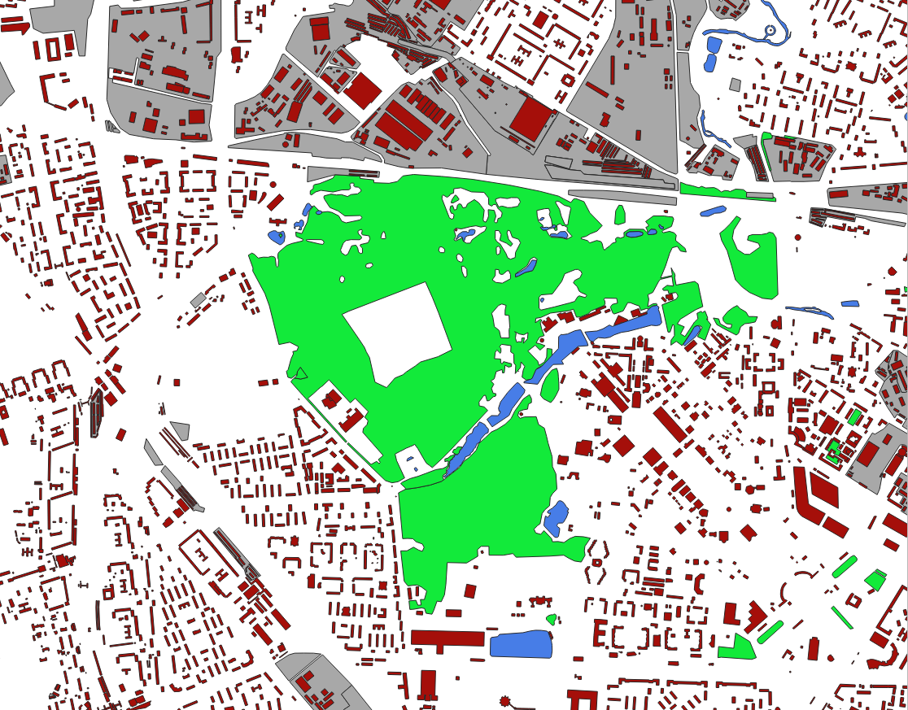
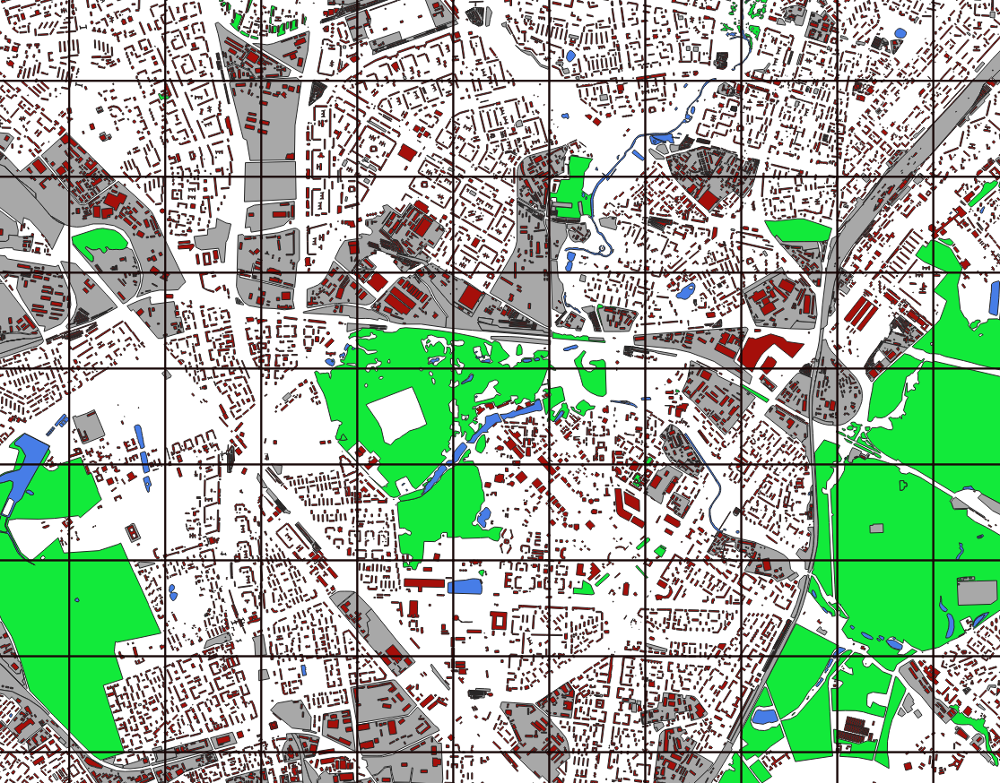
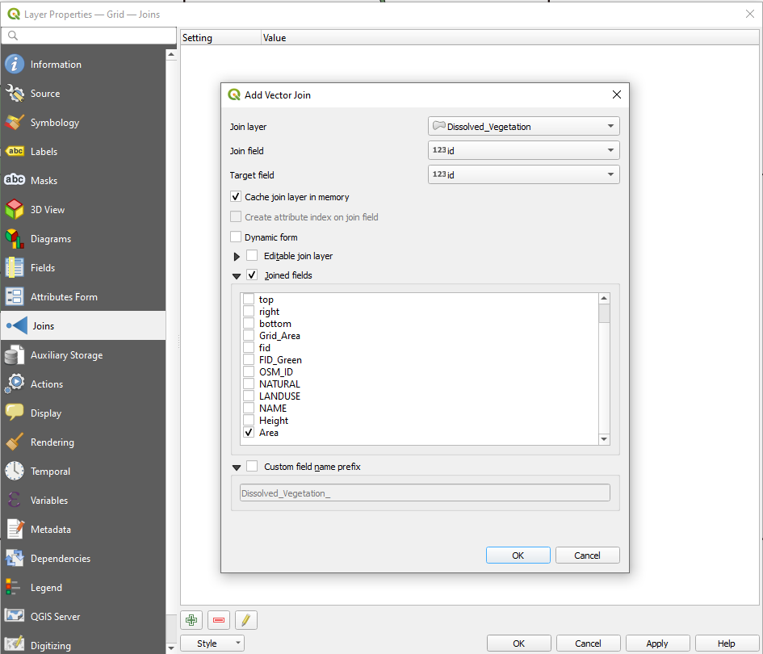
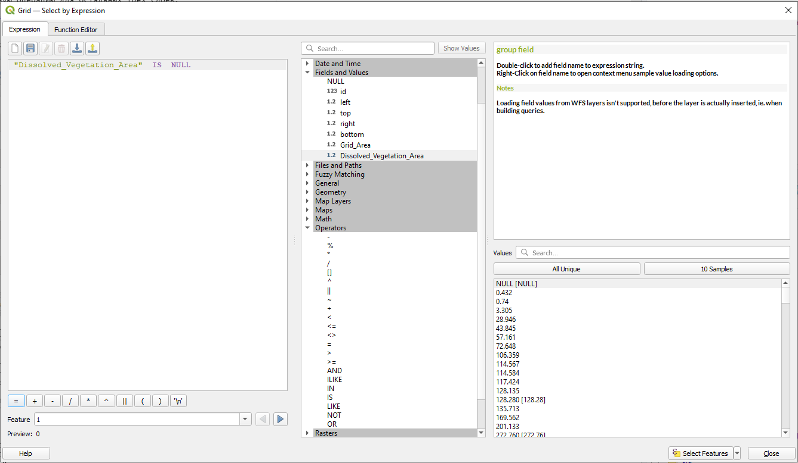

Упражнение 8 Анализ пространственных соотношений
Архив с данными и файлом отчёта
8.1 Введение
Цель задания — научиться рассчитывать соотношение различных явлений на регулярной сетке с использованием векторного оверлея.
Необходимая теоретическая подготовка: Оверлей пространственных объектов, геометрическое определение вероятности как отношения мер (площадей), соединение таблиц в реляционных базах данных, внешний и внутренний ключ соединения.
Необходимая практическая подготовка: Знание основных компонент интерфейса QGIS (менеджер источников данных, таблица слоёв, фрейм карты, менеджер компоновок). Работа с различными форматами источников пространственных данных . Настройка символики и подписей объектов. Владение базовыми ГИС-технологиями.
Исходные данные: .
Результат: карта соотношения различных типов объектов.
8.1.1 Контрольный лист
- Добавить на карту слои типов объектов и регулярную сетку, оформить их
- Произвести оверлей и слияние объектов в пределах ячеек
- Рассчитать площадь объектов
- Присоединить поля площади к таблице регулярной сетки и рассчитать площадь оставшихся объектов
- Визуализировать результат
8.1.2 Аннотация
Задание посвящено знакомству с пространственным анализом на основе векторных данных. Векторная модель представляет объекты в виде отдельных геометрических фигур с набором атрибутов. Она является объектно-ориентированной и удобна для анализа формы, размеров объектов, их взаимной конфигурации в пространстве. Одним из широко используемых методов анализа на основе векторных данных является оверлей.
При оверлее происходит наложение двух или более слоев, в результате чего образуется их графическая композиция. Полученные участки наследуют атрибуты от каждого слоя. Эта операция базируется на стандартных отношениях множеств, таких как пересечение, объединение и симметрическая разность.
С помощью оверлея можно, например, установить, как соотносятся площади объектов разных типов в пределах ячеек регулярной сетки. Это может быть важно при моделировании, например, локальных климатических зон или анализе экологической ситуации.
8.2 Визуальный анализ векторных слоев
В первую очередь при анализе данных следует провести их визуальную оценку, которая может натолкнуть на отыскание закономерностей во взаимном расположении объектов.
Распакуйте архив с материалами упражнения в свою рабочую директорию. Создайте проект QGIS в папке с распакованными материалами.
Добавьте на карту слои Industrial, Hydro, Green, Buildings из базы данных
LandCover.gpkg. Присвойте этим слоям разные цвета для лучшего восприятия данных.
Создайте регулярную сетку квадратов Vector – Research tools – Create Grid. В открывшемся окне параметров инструмента выберите необходимый тип сетки, укажите вертикальный и горизонтальный шаг сетки в 1000 м, а в качестве экстента (охвата) слоя укажите существующий слой проекта Buildings. Уберите заливку полученного слоя и переместите его наверх.
Скриншот 1: Визуализация исходных данных

8.3 Расчёт площадей и оверлей
Для расчёта доли площади каждого типа объекта в пределах ячейки необходимо рассчитать площадь самой ячейки. Для этого откройте атрибутивную таблицу слоя и выберите кнопку . В открывшемся окне убедитесь, что вы создаете новое поле. Укажите имя поля CellArea, выберите соответствующий тип поля. Для расчёта используйте команду $area.
Пояснение:
area()— системная функция QGIS, возвращающая площадь объекта. Значок$означает, что функция будет применена к текущему объекту. Площадь вычисляется в единицах измерения площади, предусмотренных для системы координат источника данных. Для проецированных систем координат это, как правило, метры (реже футы).
Вопрос 1: Почему рассчитанная площадь не равна 1000000?
- Для того чтобы рассчитать площади каждого типа объекта в пределах ячеек регулярной сетки, необходимо выполнить операцию пересечения (оверлея) слоев. Для этого воспользуйтесь инструментом Vector Overlay - Intersection. В качестве параметра Input layer укажите регулярную сетку, а в качестве Overlay layer укажите слой с растительностью. Результирующий слой будет называться Intersect – переименуйте его так, чтобы было понятно, в результате пересечения каких именно слоев он получился.
Временный слой в QGIS хранится в выделенной директории среди системных файлов. Если не сохранять временные файлы, они будут удалены после закрытия окна QGIS. Временные слои обозначаются соответствующим значком справа от названия в таблице слоёв.
Вопрос 2: Чем отличается полученный слой от исходного слоя растительности визуально?
Вопрос 3: Чем отличается полученный слой от исходного слоя растительности по структуре таблицы атрибутов?
Повторите аналогичную операцию для оставшихся трёх слоёв.
Обратите внимание, что в полученных слоях в пределах ячейки мы видим, как правило, не один объект, а несколько. Мы можем рассчитать площадь каждого из них, но нам нужна суммарная площадь всех объектов.

Для получения общей площади можно превратить все полигоны в пределах ячеек в мультиполигоны. Воспользуемся для этого инструментом слияния по значению атрибута – после оверлея полигонов у каждого объекта растительности появился уникальный идентификатор ячейки регулярной сетки id. Воспользуйтесь инструментом Vector – Geoprocessing Tools – Dissolve. В качестве параметров инструмента необходимо указать слой и поле атрибута, по которому будет осуществляться слияние. Результирующий временный слой будет называться Dissolved – переименуйте его так, чтобы было понятно, о каком типе объектов идёт речь.
Повторите аналогичную операцию для оставшихся трёх слоёв.
Рассчитайте площади для каждого слитого слоя с помощью калькулятора полей.
8.4 Соединение таблиц по ключевому полю
На данном этапе у вас должны быть 4 слоя с известными площадями объектов в ячейках и собственно слой ячеек, для которых рассчитана площадь. Для дальнейшего анализа нам необходимо совместить атрибутивные таблицы всех этих слоёв.
Соединение таблиц (table join) — операция, в результате которой к одной таблице временно добавляются столбцы из другой таблицы. Чтобы установить соответствие между строками исходной и присоединяемой таблицы, необходимо иметь в каждой таблице поле с общими для них значениями. Например, это может быть числовой код объекта.
Зайдите в свойства слоя регулярной сетки. Слева окна найдите вкладку Joins – добавить новое соединение можно через кнопку плюса внизу. Откроется окно, в котором нужно выбрать слой, атрибутивную таблицу которого мы хотим присоединить, а также ключевые поля, хранящие общие значения – в нашем случае это поля id. Установите галочку напротив Joined fields, чтобы выбрать поля, которые нужно присоединить – кроме поля площади нам ничего не нужно.

Проделайте аналогичную операцию для остальных трёх слоёв.
8.5 Расчёт площадей прочих объектов
Четыре типа объектов покрывают далеко не всю территорию, поскольку есть и иные объекты, которые в нашем случае не берутся в расчёт. Для корректного анализа и визуализации необходимо рассчитать оставшуюся площадь для каждой ячейки. Это можно сделать, отняв из площади ячейки площади всех объектов каждого типа. Проще всего для такой задачи воспользоваться калькулятором поля. Однако тут возникает проблема: в атрибутивной таблице встречаются значения Null в полях площадей, которые обозначают отсутствие данных. Такое значение получается в случае, если в ячейке регулярной сетки отсутствует соответствующий тип объектов. Со значением Null мы не сможем корректно рассчитать оставшуюся площадь, поэтому необходимо заменить его на 0. Для этого воспользуемся запросами к атрибутивной таблице и калькулятором полей.
Сохраните слой регулярной сетки с присоединенными полями как постоянный класс объектов, щёлкнув правой кнопкой мыши по нему и выбрав соответствующий пункт меню.
Откройте атрибутивную таблицу слоя регулярной сетки и нажмите на кнопку
 .
.В открывшемся окне составьте выражение, которое выбирает все значения Null в поле с площадью растительности. Не пишите выражение вручную, а используйте конструктор в средней и правой панели.

> Подсказка: чтобы использовать значения полей в выражении, найдите в средней панели группу «Поля и значения». Добавляйте поля в выражение, кликая по их названиям дважды левой кнопкой мыши.
Если запрос корректен, в атрибутивной таблице выберутся соответствующие строки.
Для выбранных строк необходимо задать значение 0 для соответствующего поля площади через калькулятор полей. Будьте внимательны – работайте с уже существующим полем, а не создавайте новое.
Аналогичную последовательность действий с выборкой и калькулятором полей проделайте для оставшихся трёх типов объектов.
С помощью калькулятора полей рассчитайте площадь оставшихся объектов, используя конструктор.

8.6 Настройка символики
Используйте способ картодиаграмм для визуализации полученных соотношений.

Скриншот 2: Визуализация результата
Сохраните документ карты.